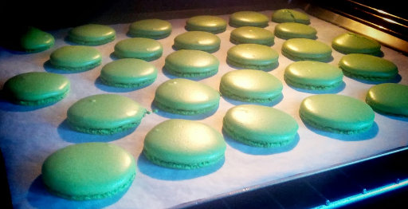
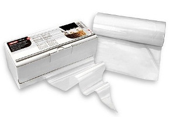
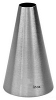
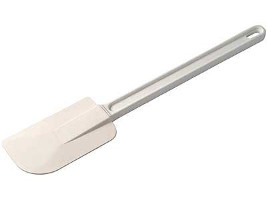
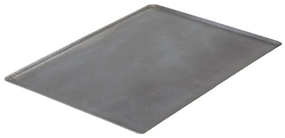

<!DOCTYPE html><html lang=fr><head><link href="http://gmpg.org/xfn/11" rel=profile /><meta charset=UTF-8 /><meta content="IE=edge" http-equiv=X-UA-Compatible /><meta content="text/html; charset=utf-8" http-equiv=content-type /><meta content="width=device-width, initial-scale=1.0, maximum-scale=1" name=viewport /><meta content="Blog de Bob Maerten ou y sont exposés en vrac, humeurs, interrogations, pâtisseries, développement web, systèmes Linux et autres curiosités." name=description /><title>Confection des macarons 1/x · Bob Maerten</title><meta content="Bob Maerten" property="dc:creator"/><meta content="text/html" property="dc:format"/><meta content=fr-FR property="dc:language"/><meta content="Bob Maerten" property="og:site_name"/><meta content=website property="og:type"/><meta content="https://bobmaerten.eu" property="og:url"/><meta content="Confection des macarons 1/x" property="og:title"/><meta content="Humeurs, interrogations, pâtisseries, développement web, systèmes Linux et autres curiosités" property="og:description"/><meta content="https://bobmaerten.eu/img/avatar2014-89449806.jpg" property="og:image"/><meta content="50.348923;3.488592" name="geo.position"/><meta content="Valenciennes, Nord" name="geo.placename"/><meta content=FR-59 name="geo.region"/><meta content="@bobmaerten" name="twitter:site"/><meta content="Confection des macarons 1/x" name="twitter:title"/><meta content="Humeurs, interrogations, pâtisseries, développement web, systèmes Linux et autres curiosités" name="twitter:description"/><meta content=summary_large_image name="twitter:card"/><meta content="https://bobmaerten.eu/img/macarons-58c269b2.jpg" name="twitter:image:src"/><meta content="@bobmaerten" name="twitter:creator"/><meta content="Confection des macarons 1/x" itemprop=name /><meta content="Humeurs, interrogations, pâtisseries, développement web, systèmes Linux et autres curiosités" itemprop=description /><meta content="https://bobmaerten.eu/img/avatar2014-89449806.jpg" itemprop=image /><link href="https://plus.google.com/+BobMaerten" rel=publisher /><link href="/atom.xml" rel=alternate title="Bob Maerten" type="application/rss+xml"/><meta content=yes name=mobile-web-app-capable /><meta content="Bob Maerten" name=application-name /><link href="/chrome-touch-icon-192x192.png" rel=icon sizes=192x192 /><meta content=yes name=apple-mobile-web-app-capable /><meta content=black name=apple-mobile-web-app-status-bar-style /><meta content="Bob Maerten" name=apple-mobile-web-app-title /><link href="/apple-touch-icon.png" rel=apple-touch-icon /><meta content="ms-touch-icon-144x144-precomposed.png" name=msapplication-TileImage /><meta content="#F5F5F5" name=msapplication-TileColor /><meta content="#F5F5F5" name=theme-color /><link href="/favicon-196x196.png" rel=icon sizes=196x196 type="image/png"/><link href="/favicon-160x160.png" rel=icon sizes=160x160 type="image/png"/><link href="/favicon-96x96.png" rel=icon sizes=96x96 type="image/png"/><link href="/favicon-32x32.png" rel=icon sizes=32x32 type="image/png"/><link href="/favicon-16x16.png" rel=icon sizes=16x16 type="image/png"/><link href="/favicon.ico" rel="shortcut icon"/><link href="../css/poole-812330fe.css" rel=stylesheet /><link href="../css/syntax-79e04e9e.css" rel=stylesheet /><link href="../css/lanyon-7e4dec9c.css" rel=stylesheet /><link href="../css/bobmaerten-42491b32.css" rel=stylesheet /><link href="https://fonts.googleapis.com/css?family=PT+Serif:400,400italic,700%7CPT+Sans:400" rel=stylesheet /><link href="/atom.xml" rel=alternate title=RSS type="application/rss+xml"/></head></html><body><input class=sidebar-checkbox id=sidebar-checkbox type=checkbox /><div class=sidebar id=sidebar><div class=sidebar-item><a class="image avatar" href="/"></a><p>Humeurs, interrogations, pâtisseries, développement web, systèmes Linux et autres curiosités</p></div><nav class=sidebar-nav><a class=sidebar-nav-item href="/about/">À propos</a><a class=sidebar-nav-item href="/">Blog</a><a class=sidebar-nav-item href="/blog/archives/">Archives</a><a class=sidebar-nav-item href="/blog/tags/">Catégories</a><a class=sidebar>-nav-item href=data.settings.social.twitter.url = data.settings.social.twitter.name</a><a class=sidebar-nav-item href="https://github.com/bobmaerten">GitHub</a><a class=sidebar-nav-item href="#email-protection-uryyb@oboznregra.rh">E-mail</a></nav><div class=sidebar-item><p>Theme <a href="http://lanyon.getpoole.com/">Lanyon </a>made by <a href="https://twitter.com/mdo"><b>@mdo</b></a></p><p>Bob Maerten / 2012 - 2016.</p></div></div><div class=wrap><div class=masthead><div class=container><h3 class=masthead-title><a href="/" title=Accueil>Bob Maerten</a> <small>Blog perso</small></h3></div></div><div class="container content"><div class=post><span class=post-date><span>16 Septembre 2013</span> — <span class="post-category post-category-patisserie"><a href="tags/patisserie.html">patisserie</a></span> </span><h1 class=post-title>Confection des macarons 1/x</h1><p>Comme le souligne si justement <a href="https://twitter.com/le_bric_a_brac/status/378512686793129985">Virginie</a>, ce blog manque cruellement de sucre ! Alors pour inaugurer cette nouvelle catégorie, je vais poster en plusieurs billets (d&#39;où le 1/x dans le titre) la recette ainsi que les trucs et astuces que j&#39;utilise pour la confection des macarons.</p> <p></p> <p> Bon, j&#39;avoue que le titre est faussement aguicheur puisque pour commencer, je vais parler un peu du matériel. Car en patisserie, avoir le bon matériel se relève vite indispensable sous peine de devoir faire avec les moyens du bord, faire mal, et être déçu du résultat. J&#39;en veux pour preuve le jour où je suis passé d&#39;une poche à douille en silicone bon marché à des <a href="#poches_jetables">poches jetables</a> avec de vraies douilles, quel changement ! Plus de précision, plus de résistance à la pression, des coupes et des décors bien net et rapidement. Rien à voir.</p> <p>Donc, pour en revenir aux macarons, voici une petite liste du matériel que je préconise :</p> <h2>poches à douille jetables avec douille</h2> <p> </p> <p>Avec une douille de 8mm lisse pour coucher la pate et la couper bien net. Ce combo vous servira pour tout appareil à former :</p> <ul> <li>macarons</li> <li>choux</li> <li>meringues</li> </ul> <p>Oubliez les trucs du genre utiliser le coin d&#39;un sac congélation, ça fouarre tout le temps.</p> <h2>une maryse</h2> <p></p> <p>Elle vous sera très pratique pour mélanger toute pâte comme un chef et bien racler le fond des récipients. Faites attention, certaines maryses ne supportent pas les fortes chaleurs, j&#39;en ai fondu une, et raté la préparation d&#39;un caramel comme cela.</p> <h2>une plaque à patisserie</h2> <p></p> <p>Bien plus rigide, droite et au fond plus pratique que la lèche-frite du four, elle se pose sur la grille du four et repartit mieux la chaleur.</p> <h2>un robot patissier</h2> <p>Même s&#39;il n&#39;est pas indispensable, le fait d&#39;avoir les mains libres est tout de même bien pratique, sans parler de certains cas ou il faut battre une préparation longtemps (meringue italienne ou génoise).</p> <p>J&#39;arrête là pour le moment sinon je vais en faire des tartines et y passer la nuit. La prochaine fois, on parlera <a href="/blog/2013/confection-des-macarons-les-ingredients">des ingrédients</a>.</p> <h3>Notes</h3> <p><a name=poches_jetables></a> Alors oui, on peut objecter l&#39;aspect jetable des poches qui ne serait pas écolo, mais franchement, lorqu&#39;on doit changer 3 ou 4 fois la poche lors d&#39;une session patisserie, comparé à l&#39;aisance et au résultat obtenu avec les poches jetables, mon choix est vite fait. D&#39;autant plus que je ne suis pas sur que le prix (et surtout l&#39;aisance) d&#39;une poche jetable vaille les 20 à 30 litres d&#39;eau nécessaires pour nettoyer une poche recyclable. Mais bon, si vous souhaitez en discuter, il y a les commentaires ci-dessous. ;-)</p> </div></div></div><label class=sidebar-toggle for=sidebar-checkbox></label><script>(function(document) { var toggle = document.querySelector('.sidebar-toggle'); var sidebar = document.querySelector('#sidebar'); var checkbox = document.querySelector('#sidebar-checkbox'); document.addEventListener('click', function(e) { var target = e.target; if(!checkbox.checked || sidebar.contains(target) || (target === checkbox || target === toggle)) return; checkbox.checked = false; }, false); })(document); </script><script type="text/javascript">!function(){try{var a,b,c,d,g=document.getElementsByTagName("a");for(c=0;g.length-c;c++)try{b=g[c].getAttribute("href"),b&&b.indexOf("#email-protection-")>-1&&b.length>19&&(a="",d=19+b.indexOf("#email-protection-"),b.length>d&&(a=b.substr(18).replace(/[a-zA-Z]/g,function(a){return String.fromCharCode(("Z">=a?90:122)>=(a=a.charCodeAt(0)+13)?a:a-26)})),g[c].setAttribute("href","mailto:"+a))}catch(h){}}catch(h){}}();</script>
</body>